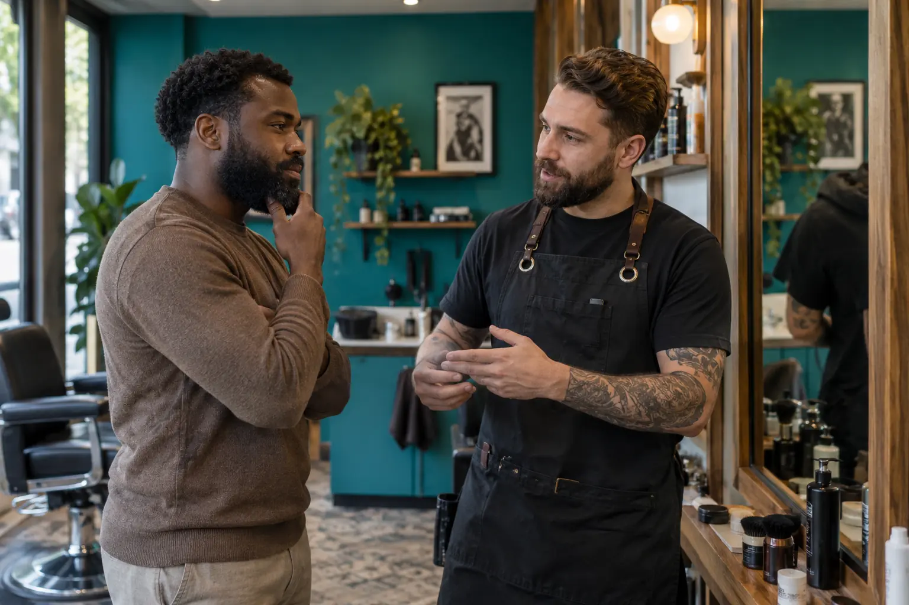

Barzdos paslaugų kaina ir trukmė: formavimas, skutimas ir papildomi darbai
Autorius: Madbeauty redakcija · Numatyta 2026 m. lapkričio 23 d. 10:00 (Lietuvos laiku)
Palyginkite konkrečių barzdos paslaugų kainą ir laiką. 2026 m. spalio 9 d. peržiūrėti trys teikėjų meniu pavyzdžiai ir paaiškinta, kodėl jų negalima laikyti tiesioginiu reitingu.

Barzdos paslaugų kainą ir trukmę verta lyginti tik sulyginus darbų apimtį. 2026 m. spalio 9 d. peržiūrėtuose meniu atskiro barzdos modeliavimo pavyzdys kainavo 30 Eur ir truko 60 min., o vyrų kirpimo bei barzdos modeliavimo paketų pavyzdžiai kainavo 40 Eur už 60 min. ir 45 Eur už 90 min. Tai konkrečių teikėjų meniu įrašai, ne Lietuvos kainų vidurkis ar Madbeauty pasiūla.
Datuoti kainos ir trukmės pavyzdžiai
Šie įrašai rodo, kodėl svarbu tikrinti ne vien sumą, bet ir tai, kokie darbai į ją įtraukti:
- Atskiras barzdos modeliavimas: „Barzdaskučiai – Europa“ meniu nurodo 60 min. ir 30 Eur. Peržiūrėti „Barzdaskučiai – Europa“ meniu.
- Vyrų kirpimas ir barzdos modeliavimas: „Looks“ meniu nurodo 60 min. ir 40 Eur. Peržiūrėti „Looks“ meniu.
- Plaukų kirpimas ir barzdos modeliavimas: „Barzdaskučiai – Europa“ meniu nurodo 90 min. ir 45 Eur. Peržiūrėti „Barzdaskučiai – Europa“ meniu.
Paketų negalima laikyti tiesioginiu pigumo ar greitumo reitingu. Vien pavadinimai nepatvirtina, kad į abu įtraukti tokie patys plaukų ir barzdos darbai. Prieš lygindami patikslinkite, ar užsakomas tik barzdos tvarkymas, ar ir plaukų kirpimas, kokia modeliavimo apimtis numatyta ir ką apima nurodytas laikas.
Atskiras vizitas ar paketo dalis?
Pirmiausia išsirinkite norimą darbą, o tada tikrinkite meniu pavadinimą. Pavyzdžiui, „Gargždų Barzdaskučiai“ atskirai įvardija barzdos kirpimo ar modeliavimo ir formavimo mašinėle ar skustuvu variantus. Šie pavadinimai parodo, kad paslaugų apimtis gali skirtis; jie savaime neatskleidžia, kas įskaičiuota į kitą teikėjo paketą. Peržiūrėti „Gargždų Barzdaskučių“ meniu.
- Užrašykite, ar norite tik barzdos modeliavimo, ar kartu ir plaukų kirpimo.
- Patikslinkite, kokie barzdos darbai įtraukti, pavyzdžiui, formavimas mašinėle ar skustuvu, ir ar meniu atskirai nurodo papildomas zonas ar darbus.
- Palyginkite tik aiškiai paskelbtą kainą ir trukmę. Jei kuri nors reikšmė meniu nepateikta, jos nespėkite.
Ką išsiaiškinti apie vizito laiką?
Nurodytą trukmę laikykite konkretaus meniu įrašo dalimi, o ne universaliu laiko standartu. Jei rinksitės paketą, pasitikrinkite, ar paskelbtas laikas skirtas visam paketui ir ar jo darbų apimtis atitinka jūsų poreikį. Skirtingų meniu 60 ir 90 minučių įrašai patys savaime neįrodo, kad vienas teikėjas tą patį darbą atlieka greičiau.
Trumpas palyginimo ruošinys
Kiekvienam pasiūlymui pasižymėkite paslaugos pavadinimą, ar įtrauktas plaukų kirpimas, barzdos darbų apimtį, kainą, nurodytą trukmę ir meniu peržiūros datą. Taip panašiai skambančius, bet skirtingos apimties pasiūlymus galėsite palyginti sąžiningiau.
Užklausą galima suformuluoti taip: „Domina [tik barzdos modeliavimas / plaukų kirpimas ir barzdos modeliavimas]. Kokia šios paslaugos apimtis ir kaina, kiek laiko jai skiriama ir kokie darbai įskaičiuoti?“
Palyginkite procedūrų aprašus kataloge: Barzda ir skutimas. Konkrečią darbų apimtį, kainą ir prieinamumą tikrinkite prie realaus teikėjo pasiūlymo.
Planuojamos vidinės nuorodos
Šaltiniai peržiūrai
- Gargždų Barzdaskučiai · metodai ir paketai — 2026-10-09 perskaitytame meniu barzdos kirpimas/modeliavimas ir formavimas mašinėle/skustuvu turi skirtingus variantus. Nėra matomos kainos; puslapyje seni atsiliepimai, todėl kainų/gyvo prieinamumo neįrodinėja. Galima paaiškinti tik paslaugų pavadinimų/apimties skirtumą.
- Looks · kirpimas ir dažymas — 2026-10-09 Looks: intensyvus plaukų drėkinimas dažymo ar kirpimo metu – papildoma procedūra, 15 min., 25 Eur (ankstesnė kaina 30 Eur). Airtouch – 5–6 val., 220–280 Eur. Vyrų kirpimas su barzdos modeliavimu – 60 min., 40 Eur. Tai meniu pavyzdžiai, ne Lietuvos vidurkis. Priedo trukmė nėra visas atskiras vizitas; konkretaus produkto ar poveikio nepatvirtina.
- Barzdaskučiai – Europa: barzdos ir kirpimo meniu — 2026-10-09 perskaitytas meniu: barzdos modeliavimas 60 min / 30 EUR; plaukų kirpimas ir barzdos modeliavimas 90 min / 45 EUR. Tai konkretaus teikėjo meniu, ne šalies vidurkis, ne Madbeauty pasiūlymai. Neperimti klientų atsiliepimų ar teikėjo kokybės pažadų.